Whirled was a Flash based online virtual world. It ran from 2007 to 2017. In the game, users could explore various rooms and worlds, chat with other players, form groups, play games (which I will refer to as mini games) and buy things from the shop. This was all standard fare for social games at the time, right? So, what was it that made Whirled stand out? While other virtual world games supplied users with content, Whirled placed a heavy emphasis on users creating and sharing their own. Woah, hold on there! Didn't games like Second Life already do that? Yes! This was definitely not an alien concept to the genre, however Whirled was at an advantage, having flash as its platform made it widely accessible to even fledgling creators!

Whirled was developed by Three Rings Design (often shorted to Three Rings), which was a US based MMO development studio. Three Rings is somewhat of an oddity among the MMO space as many of their titles approached MMO design in unique ways. They had a few hit releases; yet most people I know who have had some experience with these games often never knew who developed them and if they did, never connect their games together. Take for example, their first game, and most popular, 2003's Puzzle Pirates! Puzzle Pirates is one of those games that is quintessential to the early 2000's non-traiditonal MMO space. It's addictive, easy to pick up and utilizes it's puzzle-based minigame structure in such a unique way as each player playing completeing puzzles on the ship contribute in different ways twoards the ultimate goal of sailing and plundering!
Did you also know that Three Rings was responsible for 2011's Spiral Knights? While I can't say how sucesful it truly was; if you played Steam back in the day, you are almost certaintly gaurnteed to know about Spiral Knights because of the free hat promotion they had with TF2! This promotion was also the kick off for the first third-party Steam game to have Steam Inventory intergration!
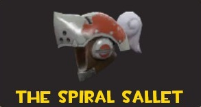https://www.gamesradar.com/a-brave-new-whirled-interview/
https://www.tigsource.com/2008/04/11/whirled-beta/
https://www.ign.com/articles/2008/11/12/get-ready-to-get-whirled
Avatars were the bread and butter of Whirled. Thanks to the community you could be just about anything or anyone (even if they were copyrighted! Not sure what the legality of that was but that didn't stop Master Chief from walking around) Avatars could be static or animated, ranging from meticulously custom drawn to ripped transparent PNG images. Surprisingly, well-made avatars were more common. Avatars worked pretty simply, they could be attributed with different states and animations for each state. To give you an idea, imagine an avatar called TF2 Classes each state could be a separate TF2 class so in the Engineer state you could play an animation where he builds a sentry, and a Heavy state where he can eat a sandvich. Animations could be programmed to play sounds too, as you can imagine this led to quite a bit of chaos.. but in this house we welcome it >:3c
Rooms were just rooms, and worlds were a collection of rooms. Like avatars, rooms were fully customizable, you could pick the background image and place furniture anywhere inside. Furniture ranged from simple images, to fully coded and interactable entities. You could also choose what music would play in the room, even set a playlist! Rooms were really like personal websites that you could hang out in. One of my friends was absolutely obsessed with Patapon, his entire world was like a fan site. Each room replicated a level in the game. He had gifs and images of various characters, and would regularly host club meetings! Speaking of fan rooms, there were a lot of rooms dedicated to the Black Eyed Peas, and I mean A LOT. Maybe it was just the early 00's vibe, but the Black Eyed Peas were really popular on Whirled. EVERY club room had at least one of their songs on the playlist, and it was probably I Gotta Feeling! I'm embarrassed to say that I was convinced that it was the best song at one point :| Pardon me while I go recite the lyrics to Welcome to the Black Parade 20 times for forgiveness.
Being built on flash, Whirled was able to have a robust mini-game scene, think Neopets but more diverse. There were your standard developer made games, which covered most bases. You had a side scrolling beat 'em up (Brawler), a run and gun (Bang! Heroes), A puzzle/manager (Corpse Craft), A rhythm game (Beat), and much more! All of which were enjoyable and well-made! Whirled also allowed users to make their own games too. I share my own experiences with user made games in a later section.
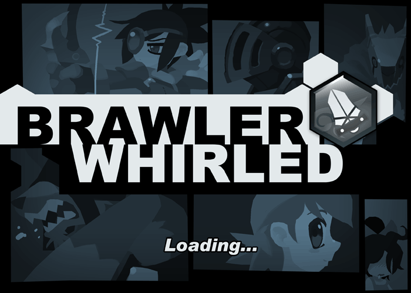 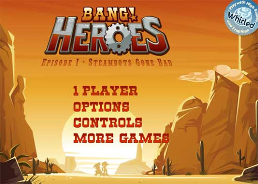 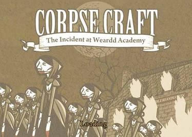So, I've mentioned avatars, rooms and furniture, but how do you get them? Cash money of course! Whirled had two currencies: coins and gold bars. Coins were the basic in-game currency that could be earned in a variety of ways, most notably by playing mini-games. Gold bars were the premium currency, you could get them by buying those cash cards they sold at pharmacies. Users uploading content could price their work at whatever they wanted, typically with the option to pay in coins or gold. Most items were priced with coins, though higher quality things usually had a high coin cost and a cheap gold cost to incentivize skipping the grind and just pay in cash. Rarely would you see an item sold exclusively in gold, the biggest exception was for commissioned things. Typically, custom-made works were priced at 9999999 gold to force exclusivity. I assume the artist would gift the work to the commissioner, if they paid some other way, maybe by purchasing a junk avatar with gold.
I joined sometime around 2008. I had a couple of go-to avatars. The first was either Madness Combat or Thing-Thing inspired, it had a ton of different states for weapons and vehicles, each with plentiful animations. I mainly used this for "combat" (by combat I mean like play combat because its not like the animations actually did anything outside of roleplaying). On the topic of Thing-Thing I also had an avatar of the dragon boss Vahl Dreig, it could shoot lasers, need I say more? My third avatar was one of Tails. I never got into the Sonic series, but it was hard to avoid in Whirled! All I know is I could do the tail helicopter thing and there was no Conker avatar that could do that. I also had a Gir avatar, this was of course for dancing :3c.
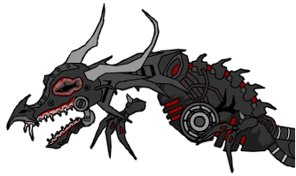 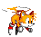My world consisted of 2 rooms. My main room had the Halo 3 teaser background with the Halo 2 main theme playing, literally nothing else. That's all you really need though, if I'm being honsest. My secondary room was a green pasture (not Windows Bliss unfortunately) it had an interactive bouncy ball, a confetti emitter, and a gif of Amy (from Sonic) attacking with a hammer. Needless to say interior design is not my passion
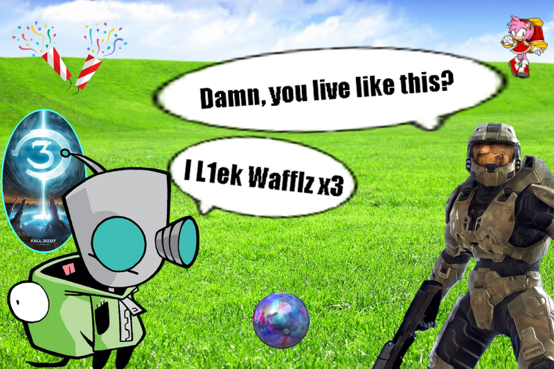You've heard of Dollz Mania, right? It was this dress up game where you could make your own virtual dolls to share and collect. They ended up being quite popular with various internet communities, though popular is not the word I would use for Whirled. Initially, Dollz were uncommon, which is fair given they were static avatars competing with countless animated ones. So why bother mentioning them? Well, its a bit hard to explain. Out of nowhere rooms started being raided by Dollz! They would start flirting (as in PG cooties humor) with anyone who crossed their path. Eventually groups would form to combat the Dollz, it became this weird metagame! Rooms were battlefields, the sound of gunfire rang throughout as hordes of Dollz blew their kisses and used their cutesy emotes. Shrugging off bullets, the Dollz would push into the next rooms, floating past the piles of wounded resistance fighters without any remorse. When the smoke cleared, the medics would rise from the shadows and tend to the wounded. The Dollz were unstoppable, only through their boredom of victory did they show mercy! Okay, maybe it wasn't that extreme, but it was still pretty wild!
I can't remember the name, but there was this avatar based zombie game, its icon was a green cross with a fist inside it. The way it worked was you would either buy a survivor or a basic zombie avatar. If a survivor were bitten by a zombie, their avatar would become infected which would force the avatar's state into a zombified one if not cured in time. Each survivor avatar came with their own unique abilities, the only one I can remember was this nurse character, she wore the stereotypical no pants white dress with the little hat. Her ability was a syringe which could cure any infected survivors. I don't even think she had a gun, which means she had to rely on other players protecting her. Being a game entirely based on avatar interaction, it was a bit clunky, but was very popular, so much so that you could see people playing it outside of its intended world!
I was going through old Whirled videos on Youtube when I noticed this avatar pop up in a menu. "Zombie Attack: Gentleman" Considering that the Nurse character I remember had an old nurse outfit and this seems to be an old timey man in a bowler hat with a revolver, I don't think it's far off to assume this avatar is from the same game.
Wyvern was a self contained RPG inside of Whirled. You would buy one of these really basic pixel avatars that represented a class (wizard, warrior, rogue) which would also track your level, skills and inventory. To play, you would go to the Wyvern world which had rooms sorted by enemy levels, and you would just fight and cast spells like a normal RPG. For each kill you got Whirled coins, EXP and various equipment that would change your stats as well as your avatars appearance i.e wizard hat. You could also buy enemy entities from the shop if you wanted to grind in your own room. Makes me wonder how the Whirled devs would regulate something like that, the economy never crashed so it must have worked out!
At first I thought that Wyvern may have been based on the graphical MUD/MMO of the same name developed by Cabochon Technologies, Inc., which was released to public alpha in 2001. but I could find no mention of Whirled on Cabochon's news archive from 2001 to 2010. This led me to believe that the name was either a conincidence or some kind of a fan-work.
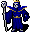 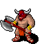 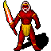 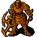 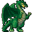 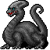After some digging I was able to locate a github repositoriy that contains many assets from the Whirled version of the game, including player and monster sprites! You can veiw the repository here; though be warned, I do not know of its legitimacy beyond the png images you can find!
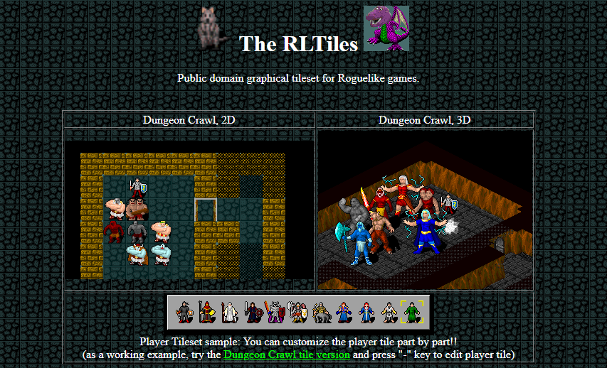While some of the sprites bear simmilarities to ones from the original Wyvern, looking at the credits file in the repository leads us to "The RLTiles", an open source graphics tileset for NetHack and Dungeon Crawl Stone Soup! This confirms that both games have no direct/offical relation and whoever made Wyvern on Whirled used the tileset for the free-to-use assets
I was also able to track down the possible source of the icon used in Whirled. It appears to be a recolored version from Games of Zorcon, a website focused around minatures and tabletop RPGS managed by a Webmaster Zorcon. Now, Zorcon also had another site where they hosted a portfolio of art and designs so it is possible there was a connection between Zorcon and the user who published the game on Whirled, resulting in the icon being used. Though as obscure as a source this would be for a single icon, I suppose it's possible the creator was a fan of Zorcon and just lifted the icon from the site.
Every now and then I do another hunt to find more information on Whirled hoping to jog my memory. I was able to find this image on what seems to be an archive of an offical Whirled wiki modified for an unoffical private server of the game.
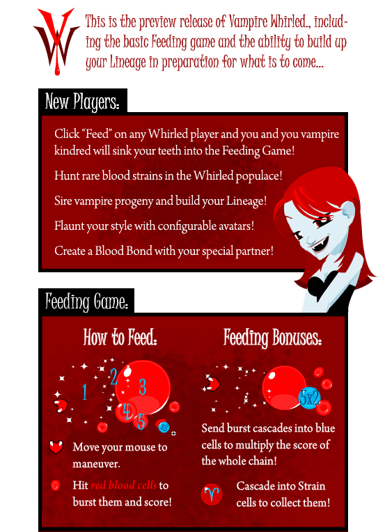This reminded me that Vampire Whirled was actually related to a Facebook game called Bite Me. I played Bite Me for a bit on a family member's account, I thought it was actually pretty fun! It was like adventure quest but less complicated and with vampires of course! I don't recall playing much of Vampire Whirled though because it was alot more social in nature. I also do not believe there was any direct connectivity between both games; as in your progress in one had no effect on the other.

There is not much on the net perserving either of these games save for like 3 very brief youtube videos on Bite Me. Two of which are just barebones cheating guides XD.
Y'know, thinking back on Whirled is so strange. Here we had this vast movement of creativity with years of content being created and shared, only for it to disappear without much of a trace in a single day! I understand that all of Whirled was hosted on a server like an MMO, but the idea that something just disappears from the internet is stunning to me. Whirled's ability to self-sustain on a single platform, was ultimately its greatest weakness. I'm hoping that by talking about Whirled, I'm doing my part in conserving some segment of its history, maybe even influence anyone with their own experiences to document them.